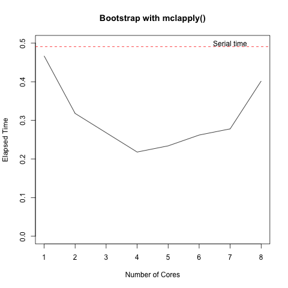
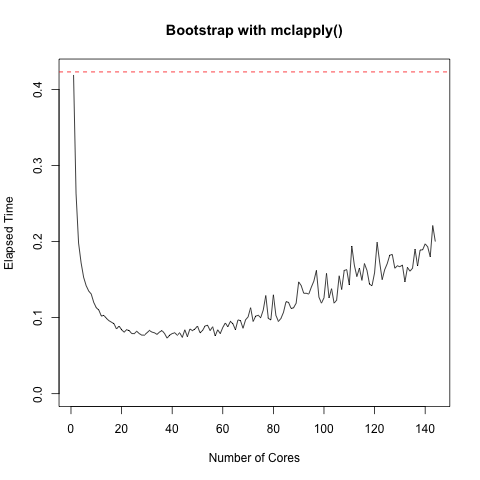

class: center, middle # Introduction to Parallel Computing in R ## [https://github.com/dsidavis/ParallelR](https://github.com/dsidavis/ParallelR) ### Duncan Temple Lang <div style="clear: both"/> <!-- <hr width="50%"/> --> <img src="http://dsi.ucdavis.edu/images/dsi_banner.png" height="40%"></img> --- layout: true <img style="float: right" src="http://dsi.ucdavis.edu/images/dsi_brand_logo.png"></img> --- # Goals of Parallel Computing 1. Speed! 1. Do more things in the same amount of time + by doing them concurrently. # Approaches 1. We explicitly dispatch code to do tasks in parallel. 1. Replace serial code R uses with parallel implementations, e.g. parallel BLAS library. 1. Identify computational bottlenecks + Profile the code - Rprof(), summaryRprof() and several packages. 1. Make code faster by + using a different algorithm/computational strategy + writing parts in C/C++ 1. But *sometimes* easy just to run existing code in parallel --- # What tasks we do in parallel? + Many things <i>could</i> be parallelized + but not clear you always gain performance. + Embarassingly Parallel tasks, e.g., + Independent simulations, resampling + Grid search + Matrix multiplication. + Reading two CSV files<sup>*</sup>. + Group-By and Compute on each group. + sum( x ) + Break x into chunks. + For each chunk, compute sum. + Compute sum of chunk totals. --- # Key Principle 1. Minimize transfer time of data to the worker nodes 1. Maximize computational time on nodes *relative* to data transfer. 1. Get the data chunks in the correct places once and reuse. 1. Send different code to the data. --- # Goals for Today 1. Introduce you to the basics of 1. Survey more advanced tools and approaches --- # Technologies 1. Shared memory, multicore 1. Distributed memory, clustered computers 1. Mix of distributed machines, each multicore. 1. 1. Threads - within process parallel execution 1. MPI - Message Passing Interface. rmpi interface. 1. Hadoop 1. Spark 1. GPUs - Graphical Processing Units. --- # Easy Parallelism 1. Use the shell 1. Numerous jobs running in the background ``` Rscript script1.R & Rscript script2.R & Rscript script3.R & ``` 1. Multiple terminals/shells + Open n terminals and run one shell command in each. + Shell can be on another machine - ssh 1. make -j <n> + for many different tasks, not just compiling. + e.g. Compiling R + 3m 35s with 16 cores + 6m 45s with 1 core + Not all steps can be done in parallel. + Have to wait for some to proceed + Make determines the dependencies. 1. Converting corpus of PDF to XML ``` time make all >& /dev/null real 5m58.973s user 5m44.279s sys 0m14.627s ``` ``` time make all -j 70 >& /dev/null real 0m22.277s user 6m33.385s sys 0m16.462s Thu Nov 16 18:54:54 PST 2017 Thu Nov 16 18:55:16 PST 2017 ``` Factor of 16 1. Why not factor of 70? --- # GNU parallel 1. Run the same command in parallel on separate inputs. 1. 22 years of Airline delay data in bzip2 CSV files. + Count the total number of records 1. Unzip each file to standard output, count the lines. ``` time bunzip2 -c *bz2 | wc -l ``` 1. Use parallel to run the same command on each file in parallel<br/> Add the results together to get total ``` time ls *bz2 | parallel -j22 "bunzip2 -c {} | wc -l" | paste -sd+ - | bc ``` 1. Times: + 357 seconds + 25.4 seconds 1. Why a factor of 14 and not 22? --- 1. Use job submission on cluster, + slurm 1. See <a href="">Bill Broadley's talk</a>. 1. [slurmJob.R](slurmJob.R) and [slurmJob.sh](slurmJob.sh) --- # Good General Practices Helping Parallel Computing 1. Since we will be running the "same" code in parallel + in different R sessions, and + often on different machines important to be able to easily "install" code and data on different machines. 1. To ease this process, use + R packages, + version control --- # Easy Parallel Computing + The parallel package + Comes with R. + Highest-level functions + mclapply + mcmapply + mcMap + pvec --- # Bootstrap a Linear Model + Fit a model and get the coefficients: ``` coef(lm(mpg ~ wt + cyl + am, mtcars[sample(nrow(mtcars), replace = TRUE), ])) ``` + Bootstrap ``` replicate(500, coef(lm(mpg ~ wt + cyl + am, mtcars[sample(nrow(mtcars), replace = TRUE), ]))) ``` + Parallel bootstrap with mclapply() ``` tm = lapply(1:8, function(nc) system.time( mclapply(1:500, function(i) coef(lm(mpg ~ wt + cyl + am, mtcars[sample(nrow(mtcars), replace = TRUE), ])), mc.cores = nc))) ``` --- # Macbook Pro OSX ## 1 CPU, 4 cores <!-- tm = do.call(rbind, tm) plot(1:nrow(tm), tm[,3], type = "l") -->  <!-- png("BootstrapCore.png") tm = do.call(rbind, tm) plot(1:nrow(tm), tm[,3], type = "l", xlab = "Number of Cores", ylab = "Elapsed Time", main = "Bootstrap with mclapply()", ylim = c(0, max(tm1))) abline(h = max(tm1), col = "red", lty = 2) text(7, .5, "Serial time") dev.off() --> --- # Linux Machine # 72 CPUs, 144 cores  --- # Number of Cores 1. This machine has 4 cores. 1. detectCores() reports 8 --- # How mclapply() works + Only on OSX, Linux, ... **NOT WINDOWS** + Uses concept of fork() to create an exact clone of original process + New process can access the same memory as its parent + So can see R objects in master's global environments + If both master and worker(s) treat data as read-only (no changes), no copies are made + If master or worker changes a shared object, immediately creates 2 separate copies. --- # How mclapply() works + For each element of vector we are applying + Create a clone of the current R process + Send R function and argument(s) to clone + Invoke function in clone + Collect answers + Only has mc.cores clones working at any time. --- # Customizing how mcapply() works + Several parameters named mc.* + mc.preschedule, mc.set.seed, mc.cores, mc.allow.recursive + mc.cores + number of cores and concurrent workers to use + How many ? See below + mc.preschedule + TRUE or FALSE + TRUE - divide elements into as many cores, send all subtasks to a worker + FALSE - send each element to its own worker, one at a time + Use FALSE when + variable time for each task, AND + few elements of X --- # How many workers to use? 1. Determine how many processors/cores are available + detectCores() 1. How many other users and jobs are running on this machine? + Including you (Web browser, other R session, ...) and the operating system 1. If on single-user, dedicated machine, `detectCores() - 1` is reasonable. --- # Perform R Task in Background + Similar to background jobs in the UNIX shell. + Start one long running task - T1 <br/> Do others (T2, T3, ... while waiting <br/> Wait for T1 to finish <br/> Next steps with results T1, T2, T3, ... + E.g. + Read CSV file A & filter the rows, transform columns, etc. + load several other datasets and organize + Start getCSVA() task ``` T1 = mcparallel(getCSVA("A.csv")) ``` + Proceed to do other tasks, with task T1 working in background ``` T2 = readRDS("other.rds") T3 = process(T2) ``` + Wait for T1 to finish ``` A = mccollect(T1) ``` --- # mcparallel() & mccollect() 1. Can run multiple tasks "in the background" simultaneously + several calls to mcparallel() + assign job identifiers to variables 1. mccollect() one, several or all in a call. 1. Can also check to see if finished without waiting for the task to finish. 1. Can also wait a fixed length of time, then get local prompt back if not finished by then. --- # mcparallel() and Which Task to Run in Background + We could run T1 in background, or { T2, T3, T4 ... } together as a single task. + Which should we run via mcparallel()? + Simple Answer + The one with the smaller result + mccollect() has to serialize the result and deserialize() back into the master process + So if A is 10 rows after processing 100Gb and the results of { T2, T3, ... } are several objects in the 100Mb or more range, we save transfer time. --- # pvec + Take a vector and performs element-wise operations - IN PARALLEL + `pvec(x, fun, ...)` + fun must be a vectorized function. + Different from mclapply() + break vector into chunks, + send each chunk to a worker + fun(chunk) is already vectorized because fun is. + Often fun is already fast enough and the overhead of parallelism doesn't make the task faster. + But useful when fun is computationally intensive. --- # Explicitly Creating a Cluster - WHY? + If you're on Windows. + If you are using multiple machines (not a single machine). + If you want to reuse the worker nodes and their state at a later time. + If the cost of creating worker processes is expensive, or initializing them. --- # Starting a Cluster of R Workers ``` cl = makeCluster(numWorkers) ``` + There are different methods for creating the workers, communicating with them, and also what R objects they initially share. ## Single Machine, Shared Memory + In this case, we will use a **FORK**ed cluster (not on Windows). ``` library(parallel) cl = makeCluster(numWorkers, "FORK") ``` --- + Don't forget to shutdown the cluster when you are finished with the workers ``` stopCluster(cl) ``` --- # SNOW - S Network of Workstations ### Why S? + Remotely login to other machines ``` install.packages("snow", repos = "http://cran.cnr.berkeley.edu") # Needs to be installed on all worker machines also. library(parallel) phall = list(host = "phall", rscript = "/usr/lib64/R/bin/Rscript") hilbert = list(host = "hilbert", rscript = "/usr/local/R-3.4.1/lib64/R/bin/Rscript") cl = makeCluster(c(rep(list(hilbert), 2), rep(list(phall), 3)), type = "SOCK") ``` + Other options - user name, location of snow library, how to connect (ssh/rsh), port, ... + Will have to install snow package (or rmpi, ...) on each machine + One time only! --- # Understanding the Workers + Not clones of the master R process + Do not have the same search() path, work space variables, etc. + Often running on different machines + So we have to initialize them + Load packages + Load data + Send data from master to --- # Run Command on All Workers + clusterEvalQ() + Use to evaluate the same command on all workers + Often used to initialize the workers ``` clusterEvalQ(library(MASS)) ``` + To source R code or change to a directory ``` clusterEvalQ(source("myCode.R")) clusterEvalQ(setwd("~/ProjectDirectory")) ``` + Remember, these files or directories must be on all workers. + May be different location for each worker, so need to be careful. + Remove a variable on each worker when it is no longer needed ``` clusterEvalQ(rm(x, y, z)) ``` --- # clusterExport() 1. We can send one or more (copies of) top-level variables on the master to each worker. + `clusterExport(cl, "x", "y")` 1. These are now global variables in each worker's work space. 1. These are separate copies. + Any changes in one worker or the master is *NOT* seen by the other workers/master. --- # clusterCall() --- # Apply functions for Cluster + clusterApply, clusterApplyLB, parLapply + clusterApply - round-robin + clusterApplyLB - load balancing + dispatches next task to worker that has just completed task + allows for tasks that take different times + either computationally different, or + worker is slower/faster than others --- # Other Cluster Apply Functions + parApply - apply() for matrices + parLapply - parallel lapply() + parSapply - parallel sapply() + parLapplyLB, parSapplyLB - load balancing version + parRapply, parCapply - Row and Column apply. --- # Subset of Cluster 1. We can subset a cluster to get a subcluster with specific workers. + Then can send tasks to those workers. ``` cl = makeCluster(hostInfoList) ``` ``` host = sapply(cl, `[[`, "host") hilbert = cl[ host == "hilbert" ] clusterCall(hilbert) clusterApply(hilbert, files, fun) ``` + Really want to send task to these, and not wait. + like mcparallel() and mccollect() --- # Shared Resources 1. CPU 1. Memory 1. Disk --- # Network File Systems (NFS) 1. We want the data to be local to the workers. 1. Often data in files are available to all the workers via a centralized file system 1. But this may mean that accessing the data comes across the workshop. + Competing for disk access + Network contention 1. Leads to idea of distributing the data to different machines (with redundancy) and sending code to the relevant worker/data combination. --- <!-- Avoid getting the same values across workers. And also how to ensure get reproducible results --> # Random Number Generation + Consider ``` fortunes::fortune() mclapply(1:10, function(i) 1/median(rnorm(1000))) ``` + What could go wrong? + Fortunately, it doesn't because mclapply() fixes matters. + However, w/o this fix, + The master will set .Random.seed because fortune() generates a random number + Then mclapply() would create cloned workers + Each worker would see the **same** .Random.seed object + So would generate the same stream of random numbers and do exactly the same computations + We would get the same result from all workers! + mclapply() avoids this by setting the seed in each worker separately. + Can control this. --- # Resources 1. parallel package 1. Parallel R book, McCallum and Weston 1. Parallel Computing for Data Science..., Norm Matloff 1. [Programming with Big Data in R (pbdR)](http://rbigdata.github.io/) 1. [CRAN Task View on HPC](https://cran.r-project.org/web/views/HighPerformanceComputing.html) 1. ... ---